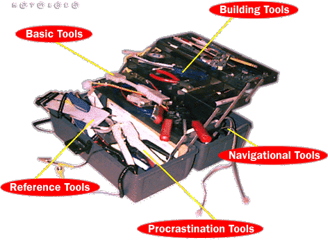
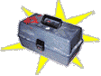

Basic Tools: Browsers, helper apps
Building Tools: HTML guides, style tips, free icons
Navigational Tools: Directories, search engines, filters
Reference Tools: Dictionaries, Yellow Pages, newspapers
Download your very own Webomatic Toolkit!
The Webomatic is a work in progress.
If you have suggestions
for future links or categories,
please email us at
toolkit@hotwired.com.
